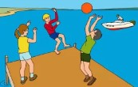
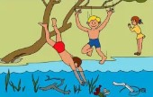
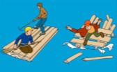
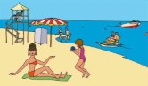
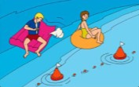
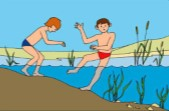
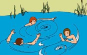
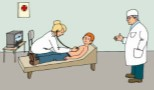
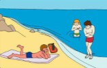

ПОШЛИ КУПАТЬСЯ!

|
Не стой и не играй в тех местах, откуда можно упасть в воду! Оступиться можно легко и незаметно, а глубина водоёма может быть очень большой. |

|
Не ныряй в незнакомых местах! Под водой могут оказаться опасные предметы и ты получишь травму. |

|
Не используй для плавания самодельные устройства! От сильного течения и твоего веса самодельный плот может опрокинуться или развалиться. |

|
Купайтесь только в разрешённых местах, на оборудованных пляжах! За безопасностью там следят спасатели. |

|
Не заплывайте далеко от берега на надувных матрасах, так как матрас или другой подобный предмет может неожиданно спустить воздух и тебе придётся плыть самому! |

|
В воде избегайте вертикального положения. Не ходите по илистому и заросшему водорослями дну. Да и вода на дне намного холоднее. |

|
Не боритесь с сильным течением! Не надо напрасно тратить силы. Плывите по течению постепенно приближаясь к берегу! |

|
Перед купальным сезоном обязательно посетите врача! Если ты недавно переболел, отдых на водоёме может резко ухудшить твоё здоровье. |

|
Не переохлаждайтесь и не перегревайтесь! После приёма пищи сделайте перерыв 1,5 – 2 часа! Не купайтесь при температуре: воды – ниже 18 градусов по Цельсию;" воздуха – ниже 22 градусов по Цельсию. |
Источник и подробная информация о действиях на сайте:
http://www.culture.mchs.gov.ru
ТЕЛЕФОН СЛУЖБЫ СПАСЕНИЯ: 112